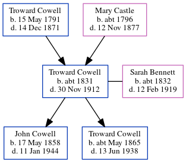

Troward Cowell c1831 - 1912
[ Home ] | [ Calendar ] | [ Surnames Index ] | [ Errors ] | [ Family History ]The child of Troward Cowell and Mary Castle, Troward Cowell, the great-great-grandfather of Nigel Horne, was born in Wingham, Kent, England c. 18311,2,3,4,5,6,7,8,9, was baptised there at St Mary the Virgin Church on 19 Jun 1831 and also married Sarah Bennett (with whom he had 2 children: John and Troward) there at St Mary the Virgin Church on 13 May 185611 (Married in Wingham Parish Church). Like his father, he was an agricultural labourer.
During his life, he was living in Wingham Well, Kent, England on 6 Jun 184116; at his birthplace in 18512; at Stodmarsh Street, Stodmarsh, Kent on 7 Apr 18613; at Nethergone, Chislet, Kent on 2 Apr 18714; in Island Road, Westbere, Kent on 3 Apr 18815; in Upstreet, Kent, England on 5 Apr 18916 and on 31 Mar 190115; and at Woodchurch Farm, Acol, Kent on 2 Apr 191113.
He died on 30 Nov 1912 at 4 Church Cottages, Acol, Kent, England9,10 (senile decaychronic bronchitis/heart failure).
Parents
- Troward was born on 15 May 1791
- Mary was born c. 1796
Children
- John was born on 17 May 1858
- Troward was born c. May 1865
Citations
- 1841 England Census Online publication - Provo, UT, USA: The Generations Network, Inc., 2006.Original data - Census Returns of England and Wales, 1841. Kew, Surrey, England: The National Archives of the UK (TNA): Public Record Office (PRO), 1841. Data imaged from the National
- 1851 England Census Online publication - Provo, UT, USA: The Generations Network, Inc., 2005.Original data - Census Returns of England and Wales, 1851. Kew, Surrey, England: The National Archives of the UK (TNA): Public Record Office (PRO), 1851. Data imaged from the National
- 1861 England Census Online publication - Provo, UT, USA: The Generations Network, Inc., 2005.Original data - Census Returns of England and Wales, 1861. Kew, Surrey, England: The National Archives of the UK (TNA): Public Record Office (PRO), 1861. Data imaged from the National
- 1871 England Census Online publication - Provo, UT, USA: The Generations Network, Inc., 2004.Original data - Census Returns of England and Wales, 1871. Kew, Surrey, England: The National Archives of the UK (TNA): Public Record Office (PRO), 1871. Data imaged from the National
- 1881 England Census Online publication - Provo, UT, USA: The Generations Network, Inc., 2004. 1881 British Isles Census Index provided by The Church of Jesus Christ of Latter-day Saints © Copyright 1999 Intellectual Reserve, Inc. All rights reserved. All use is subject to the
- 1891 England Census Online publication - Provo, UT, USA: The Generations Network, Inc., 2005.Original data - Census Returns of England and Wales, 1891. Kew, Surrey, England: The National Archives of the UK (TNA): Public Record Office (PRO), 1891. Data imaged from The National
- 1901 England Census Online publication - Provo, UT, USA: The Generations Network, Inc., 2005.Original data - Census Returns of England and Wales, 1901. Kew, Surrey, England: The National Archives of the UK (TNA): Public Record Office (PRO), 1901. Data imaged from the National
- 1911 England Census Online publication - Provo, UT, USA: Ancestry.com Operations, Inc., 2011.Original data - Census Returns of England and Wales, 1911. Kew, Surrey, England: The National Archives of the UK (TNA), 1911. Data imaged from the National Archives, London, England.
- England & Wales, FreeBMD Death Index: 1837-1915 Online publication - Provo, UT, USA: The Generations Network, Inc., 2006.Original data - General Register Office. England and Wales Civil Registration Indexes. London, England: General Register Office. © Crown copyright. Published by permission of the Cont
- England & Wales deaths 1837-2007 - Findmypast
- England & Wales, FreeBMD Marriage Index: 1837-1915 Online publication - Provo, UT, USA: The Generations Network, Inc., 2006.Original data - General Register Office. England and Wales Civil Registration Indexes. London, England: General Register Office. © Crown copyright. Published by permission of the Cont
- 1871 England, Wales & Scotland Census - Findmypast (was age 39 and the head of the household)
- 1911 Census for England & Wales - Findmypast (was age 79 and the father of the head of the household)
- 1891 England, Wales & Scotland Census - Findmypast (was age 59 and the head of the household)
- 1901 England, Wales & Scotland Census - Findmypast (was age 69 and the head of the household)
- 1841 England, Wales & Scotland Census - Findmypast (was age 11 and the son of the head of the household)
- 1861 England, Wales & Scotland Census - Findmypast (was age 29 and the head of the household)
Media
Troward Cowell - Sarah Rebecca Bennett - Marriage

Troward Cowell - death certificate

1911 UK Centus page 1

1871 UK Census

1881 UK Census

1861 UK Census

1871 UK Census
1881 UK Census
1891 UK Census

1901 UK Census

1861 England, Wales & Scotland Census Transcription - GBC-1861-0003425894
Canterbury Marriages - GBPRS/CANT/M/97246698/1
England & Wales marriages 1837-2008 - BMD/M/1856/2/AD/000423/032
1911 England, Wales & Scotland Census Transcription - GBC-1911-RG14-04481-0159-3
England & Wales deaths 1837-2007 - BMD/D/1912/4/AZ/000173/077
1891 England, Wales & Scotland Census - GBC/1891/0005761138
1901 England, Wales & Scotland Census - GBC/1901/0006239136
1841 England, Wales & Scotland Census - GBC/1841/0013985844
England Births & Baptisms 1538-1975 - R_884741662
Kent Baptisms - GBPRS/CANT/B/96569990
Family Trees - FMP/1623417760
Family Tree
Map
Generated by ged2site. Last updated on Jul 3, 2024
Known Issues
May have been living with mother on 6 Jun 1841, but the addresses don't match or aren't detailed enough to be sure
May have been living with father on 6 Jun 1841, but the addresses don't match or aren't detailed enough to be sure
May have been living with father on 1851, but the addresses don't match or aren't detailed enough to be sure